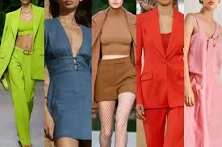
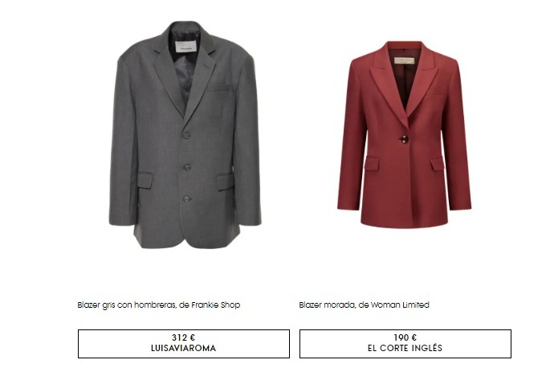
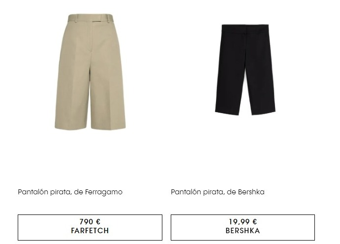

Todas las tendencias y colores de primavera-verano 2024 en una guía de estilo de nueva temporada
Es tiempo de tendencias de primavera verano 2024. Con el calor asomando en días con temperaturas cada vez más
amables, podemos decir que nos encontramos ante una serie de propuestas un poco alejadas de lo que hemos visto en otras temporadas. El primer ejemplo destaca esa
renuncia a la viva paleta cromática que suele teñir el armario de cara al buen tiempo. 2024 promete ser todo
lo contrario, ya que nos depara una temporada de tonos oscuros y sobrios estampados que dejan protagonismo a la silueta y a la
forma de combinar las prendas. En ese sentido, recopilamos las tendencias más candentes que hemos detectado para cuando empiecen
a subir las próximas temperaturas. De la silueta más popular al color que teñirá todo el armario, estas son las claves
de primavera-verano 2024.

Una silueta: Hombreras poderosas
Si hay una tendencia por excelencia de cara a la próxima primavera 2024, esa viene definida por una silueta de quarterback
en la que todo el protagonismo recae en el torso. Se llevan hombreras esculturales, que perfilan una figura a menudo
triangular, muy propia de los años 80, contrastando hombros marcados con cinturas muy finas. Es la máxima que encontramos,
por ejemplo, en Max Mara o en la sastrería de Prada, quien propone chaquetas de mangas largas por debajo de shorts de talle
alto y cinturón. En el sentido opuesto, la tónica pasa por blazers con hombreras XL y patrones igual de oversize, combinadas
con faldas plisadas, como en Lapointe, shorts, como en Jil Sander o sin nada debajo, en línea con Vuitton o Area. El estilo más
utilitario lo encontramos en Khaite, con trenchs que evocan las que se llevaron en los años de la Segunda Guerra Mundial. El
punto desaliñado y romántico lo pone (cómo no), Galliano al frente de Margiela en looks en blanco y negro.

Unos pantalones: los piratas
Lo adelantamos la pasada primavera y en 2024 lo volvemos a ratificar: el denostado pantalón pirata, con
su reconocible corte justo por encima de la rodilla, está de vuelta. Phillip Lim, Ferragamo y Coperni proponen la versión más
deportiva, hasta con el elástico del chándal, que se combina con camisas de rayas y blazers cortas para dar un giro fresco a la
sastrería. Dior opta por una versión crema en satén, un acabado sofisticado que también emplea Nº21 para sus conjuntos
pijameros. Blumarine, fiel a la estética dosmilera, propone llevarlos a la vertiente más festiva en un vivo tono dorado.

Un top: el polo
Olvida el tank-top blanco: la camiseta por antonomasia de esta primavera-verano 2024 viene con unas coordenadas muy específicas que centran
la atención justo debajo del rostro. Se lleva el cuello polo, en prendas que van desde las referencias al rugby de GDCS,
pasando por el tenis en Gucci (con microshorts a juego). Ralph Lauren lo propone incluso de noche, en color dorado y con una maxi
falda en color negro. Miu Miu y Rachel Comey se decantan por la estética preppy, en clave dosmilera y masculina oversize,
respectivamente, con chaqueta a juego.